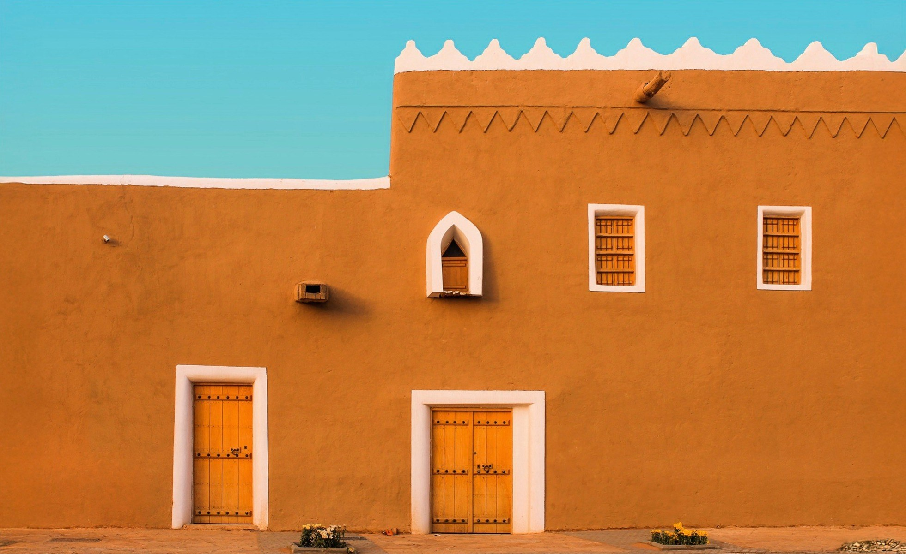
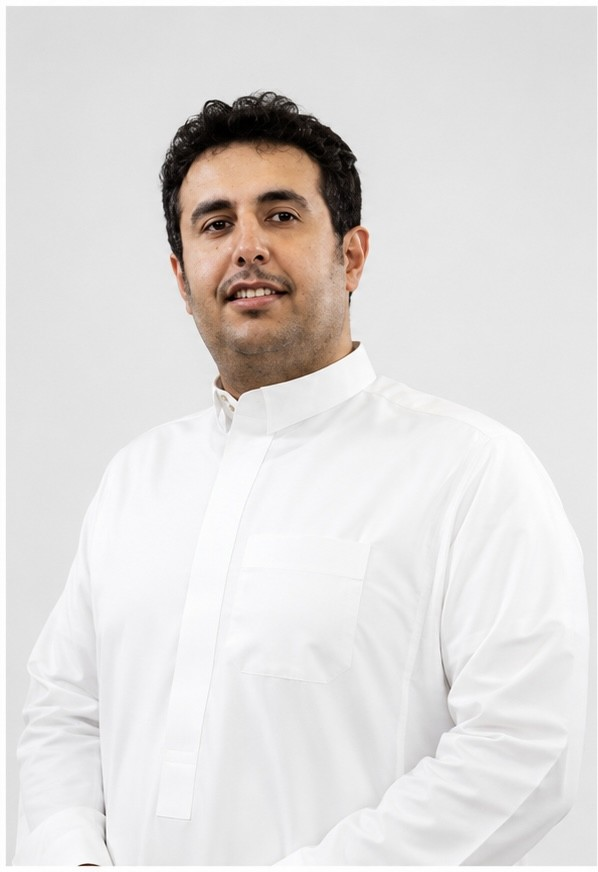
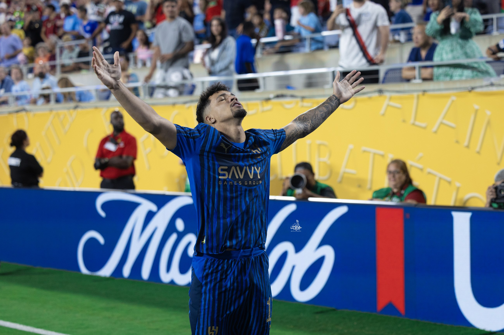

مصوّر فوتوغرافي · منتج بصري · مؤسس
الصورة وحدها لغة يفهمها العالم بأكمله — دون ترجمة.

محمد أحمد الحصين
مصوّر فوتوغرافي من محافظة الغاط، يبحث عن الجمال داخل التفاصيل — يحوّل اللحظة إلى قصة، والحركة إلى إحساس.
منذ عام 2011، امتدت تجربته من صخب الملاعب وسرعة الحركة، إلى ملامح الوجوه وأدق التفاصيل، عبر تغطيات ميدانية لفعاليات وبطولات داخل المملكة وخارجها. يمتلك اليوم استديو إنتاج إعلامي متكامل، يقدّم من خلاله حلولاً بصرية في التصوير والإنتاج، بمعايير عالية من الدقة والاهتمام بالتفاصيل.
"كل لقطة عندي تُصنع بروحٍ ترى ما لا تراه العين."

هدف واحد، وقصة كاملة
حين هزّ ماركوس ليوناردو الشباك أمام مانشستر سيتي في كأس العالم للأندية FIFA، لم تكن هناك فرصة لالتقاط لقطة ثانية. لحظة حاسمة واحدة، وإطار تاريخي واحد — وعدسة محمد كانت هناك لتختصر المباراة كلها في صورة.
أرقام لا تُقال، بل تُرى
- منذ
- 2011
- أكثر من
- 0+ جهة ومؤسسة
- بطولة
- FIFA كأس العالم للأندية
- شراكة
- وزارة الرياضة
أينما تكون القصة، تكون العدسة
-
01
التصوير الرياضي
تغطيات ميدانية لأكبر البطولات المحلية والدولية، بتوقيت الحركة ولحظة الذروة.
-
02
التصوير الشخصي والبورتريه
جلسات تصوير تعكس الهيبة والحضور، لقادة ومؤسسات وشخصيات عامة.
-
03
الإنتاج التجاري والمنتجات
تصوير منتجات وحملات تجارية بجودة تليق بالعلامات الفاخرة.
-
04
الفعاليات والمناسبات الكبرى
توثيق بصري كامل للمؤتمرات والفعاليات الرسمية والحفلات الكبرى.
-
05
التصوير العقاري والمعماري
عدسة تُبرز الخطوط والمساحات، لمشاريع عقارية وهوية معمارية مميزة.
-
06
المطاعم والضيافة
تصوير يحوّل التفاصيل الصغيرة — نكهة، ملمس، رائحة — إلى لغة بصرية شهية.
-
07
الزواجات والمناسبات الخاصة
توثيق حميمي للحظات لا تتكرر، بحس سينمائي هادئ.
معرض، لا أرشيف
كل مشروع هنا يُروى كقصة قائمة بذاتها — لا مجموعة صور، بل لحظة مختارة بعناية.
كأس العالم للأندية FIFA
حضور وهيبة
هوية تجارية
ثقة لا تُشترى
- FIFA
- وزارة الرياضة
- الاتحاد السعودي لكرة القدم
- نادي الهلال
- الدوري السعودي للمحترفين
- فلاورد
- سلة
- هيئة التراث
- البنك السعودي الأول
- جامعة المجمعة
وأكثر من 30 جهة ومؤسسة أخرى داخل المملكة وخارجها.
على أرض الحدث، في كل مرة
- كأس العالم للأندية FIFAالولايات المتحدة، 2025
- كأس العرب للمنتخباتقطر، 2025
- كأس آسيا للمنتخباتقطر، 2023
- دوري أبطال آسياالسعودية، الخليج، اليابان
- كأس السوبر السعوديأمام الإيطالي والإسباني
- كأس خادم الحرمين الشريفينالمملكة العربية السعودية
- الدوري السعودي للمحترفينتغطية موسمية
- بطولات الاتحاد السعوديالريشة، التنس، الطاولة، البادل
عدستي كما يراها الآخرون
حين تنشر جهة رسمية صورة تحمل توقيعي، فتلك أبلغ شهادة. هنا مساحة مخصّصة للتغريدات الرسمية — جاهزة لاستقبال الروابط الحقيقية فور توفّرها.
-
PLACEHOLDER — تغريدة رسمية من إحدى الجهات الرياضية
-
PLACEHOLDER — تغريدة رسمية من اتحاد رياضي
-
PLACEHOLDER — تغريدة رسمية من نادٍ أو بطولة
-
PLACEHOLDER — تغريدة رسمية من جهة حكومية
-
PLACEHOLDER — تغريدة رسمية من علامة تجارية
-
PLACEHOLDER — تغريدة رسمية إضافية
خبرتي تمتد من الحركة السريعة في الملاعب، إلى ملامح الوجوه، وصولًا إلى أدق التفاصيل.
لنصنع القصة القادمة
سواء كان مشروعًا رياضيًا كبيرًا، أو حملة تجارية، أو لحظة تستحق أن تُروى — العدسة جاهزة.
راسلني الآن- الموقع
- الرياض، المملكة العربية السعودية
- البريد الإلكتروني
- malhussayyen@gmail.com